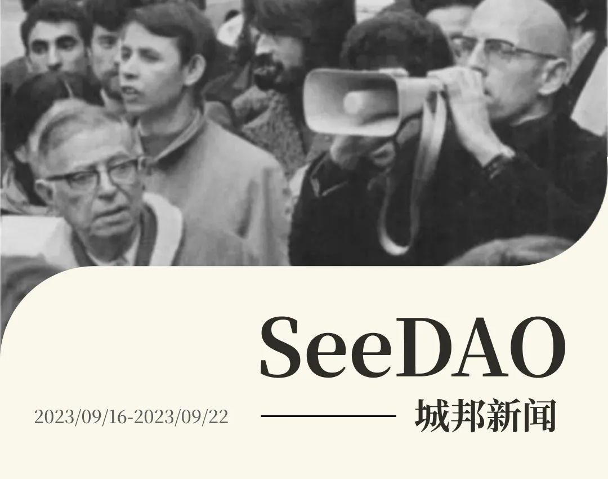
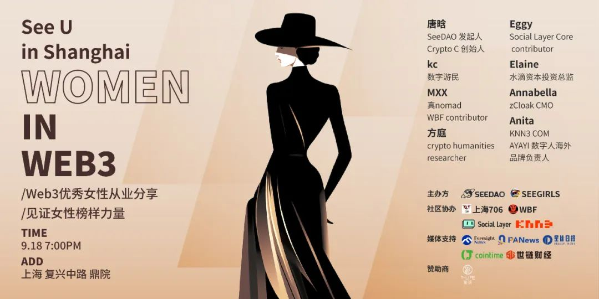
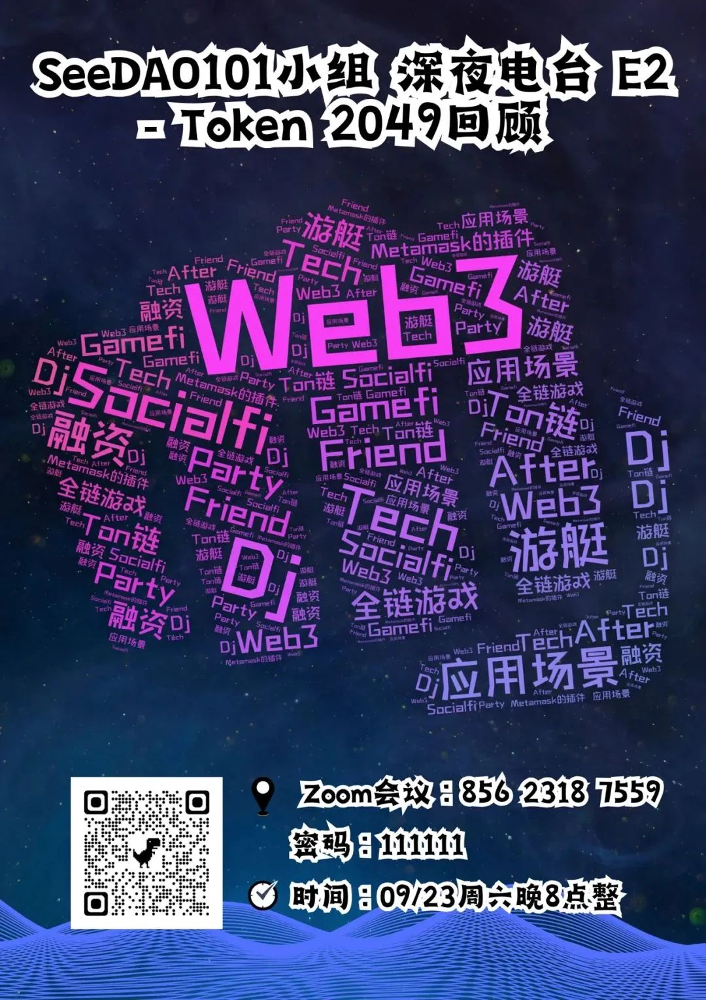

🎙️ SeeDAO 社区大会 S4 市政厅见面会和 S4 畅想 🔥
🙋♀️ SeeUinShanghai | Women in Web3 🔥
✍ 歪脖三观的第 17 篇原创｜翁浩《将承诺上链：唤醒长期主义》
✍ 翻译公会｜Demian 关于加密游戏的有力论述 - 我们为什么构建《黑暗森林》
✍ 翻译公会｜ SeeMusic | #23 NFT还合法吗？

✦ SeeDAO白皮书节点监督投票答疑
✦ Seed 项目结项投票 ｜未通过，需项目Leader参会做解释及答疑，时间另行商定。
✦ SeeDAO 内部治理小组（单独召开了 S4 内部会议）、品牌小组、技术官的工作思路探讨
/ 岗位要求：SeeDAO 成员 （ 持有 SeeDAO 积分 或 入门 SBT ）+ 5000 以上积分
/ 岗位职责：
确保每周社区社区顺利召开：确定大会议题和分享者、海报制作、大会文案发布、以及会议主持。【必须能独立搞定简单海报】
收集本周社区重要信息并在社区大会进行同步，协作《城邦周报》。
岗位补贴：单次会议 1500 积分，一季度不超过 20000 分。
报名方式：填写表单 https://tally.so/r/3j6jx 9 月 22 日晚 8 点【 UTC+8 】前截止


✦ 翻译公会| 新一季协调小组成员：Alex、Nechi、Jerry_X
✦ 共学分享：来自路鹿鹭的《加密领域的初创公司创业失败的四个原因》空投和流动性计划，吸引人，代币/项目不吸引人，离开；市场契合的产品不需要巨额资金和大量人力投入；（运气成分也很大）；需要一段时间寻找到真正的解决方案。周期性概念很强。公司存活时间足够长才有机会。自己也在学习智能合约开发和审计开发知识，了解各种各样的项目，等牛市归来。
✦ 议题探讨：翻译书刊项目（很拉轰有没有，有兴趣的速来）🔥
✦ 来自 Demian 的译文《关于加密游戏的有力论述 - 我们为什么构建《黑暗森林》
✦ SeeMusic | #23 NFT还合法吗？
✦ Metale“Amphil”杯AI成长小说校对大赛，评审团召集筹备中，欢迎大家报名！还有 Token 等丰富的奖励 🔥

✦ 共学主题：隐私赛道（来龙去脉以及机会和目前局势）
/ 分享嘉宾：Cathy｜Nym 中国负责人
/ 隐私是区块链世界较早出现的赛道。隐私赛道最早出现于 2013 年，Nicolas van Saberhagen 发表了“CryptoNote”协议，门罗币在此基础上于 2014 年诞生，其后多种基于不同的匿名技术的用于链上匿名交易的隐私币诞生。随着公链可编程性与可拓展性的提高，用户的其他隐私数据也有被保护的需求，隐私计算项目应用而生，如 Oasis network，Phala network，Platon network 等。此外，大量的基于隐私交易的公链级项目也在 2021 年开始出现。与其它赛道相比，隐私板块整体发展较为缓慢，但是从机构融资情况来看，该赛道却一直受到顶级 VC 的青睐。据笔者不完全统计，自 2021 年以来，隐私交易相关的公链级项目总融资已经超过 6 亿美元。

✦ 恭喜 菲格罗亚（研发负责人）和 rectinajh（产品负责人）通过竞聘正式履新


当承诺上链，成为不可篡改的记录，它便赋予了我们行动的责任和使命感，更在这个数字化、碎片化的世界里，为信任注入了持久的力量。上链让每一个诺言不再飘渺，每一份承担不再模糊，每一次选择都是庄重的。

✦ 歪脖三观｜系列研讨会第1期｜僭越与反噬——从按劳分配到按乐分配
/ Web3女性榜单里乱七八糟，竟然还有黄推，搞什么啊。

文字记者| 华子
排版 | T1NG
审核 | Ines